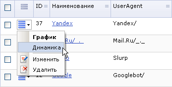

Динамика посещений сайта поисковиком
Переход к данной форме осуществляется со страницы со списком поисковиков, используя меню действий поисковика:

В форме Динамика индексации сайта поисковиком представлена динамика по дням, выраженная в цифрах.
Фильтр
| Параметр | Описание |
|---|
| Поисковик | В этом списке можно выбрать поисковые системы, которые следует отобразить на диаграмме. |
| Период | Временной интервал, за который необходимо представить диаграмму. |
Для того чтобы вывести таблицу по заданным критериям поиска, нажмите кнопку Найти.
Контекстная панель
| Кнопка | Описание |
|---|
| Список | Нажатие этой кнопки открывает форму со списком всех поисковых систем. |
| График | Открывает форму с графиком индексации сайта данной поисковой системой. |
| Настроить | Позволяет перейти к диалогу настройки внешнего вида отчетной формы. |
| Excel | Экспортирует данные из отображаемой таблицы в формат MS Excel. |
Таблица
| Дата | Хитов |
|---|
| [1] | [2] |
| Выбрано:[3] | Всего хитов:[4] | |
|---|
- Дата.
- Количество проиндексированных страниц за соответствующую дату.
- Количество записей, выбранных из базы данных.
- Общее количество проиндексированных страниц.